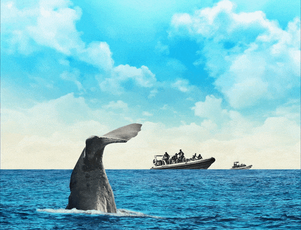
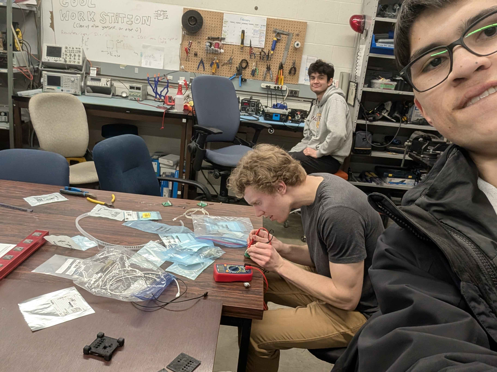

I enjoy hiking, and for years I have frequented the front-country trails of British Columbia. Anyone who spends time in the mountains knows the specific exhaustion of standing at an unmarked junction. You look out over a sprawling expanse of deep timber, intersecting valleys, and jagged ridgelines. The landscape is majestic, but it is also overwhelmingly complex and illegible. Without context, a dense forest is just an impenetrable fortress of wood. A wrong turn in the sheer scale of the wilderness will leave you stranded without any way of knowing where to go.
Any fears or worries of getting lost dissipate the exact moment you unfold a topographical map. The map does not carry your pack or climb the ridge for you. Instead, it takes the chaotic, raw data of the environment and synthesizes it into a readable pattern. The wilderness remains just as vast and rugged, but with the map in hand, you finally understand the terrain. You are no longer a victim of the landscape; you are an explorer moving with purpose.
Today, Canadians are navigating an equally vast, bewildering terrain: the digital wilderness of the Information Age. We are currently drowning in data, disoriented by the sheer volume of human knowledge. Continuous streams of information are at our fingertips, and we are exposed to it daily, whether we like it or not. We are wandering through a dense forest of content, algorithms, and endless feeds, and many of us have lost our bearings.
When generative artificial intelligence systems like ChatGPT suddenly dropped into our laps, the arrival felt deeply disorienting. The immediate public reaction was polarizing. Some treated it as a magical oracle capable of doing our thinking for us; others viewed it as a doomsday device designed to destroy human authenticity. But AI is neither. It is, fundamentally, a highly advanced topographical map for human knowledge.
Society’s initial reaction has largely been to use AI as a lazy shortcut, leading to a noticeable degradation in genuine learning. By adopting a strict personal policy, we can transform AI from a tool of intellectual outsourcing into a catalyst for human curiosity.
There is good reason to be skeptical of this new digital map. To embrace AI blindly is to ignore the massive physical and ethical costs attached to its creation.
First, AI is not in some “cloud”; the technology is heavily grounded in the physical world. As Canadian Geographic recently reported, there is a staggering water cost to your ChatGPT query. The computational power required to train and run Large Language Models (LLMs) demands massive amounts of electricity and fresh water to cool the overheated server farms. Every prompt we type requires literal drops of clean water, draining vital resources from our physical environment to sustain a digital one. Furthermore, the ethics surrounding the creation of these models remain incredibly murky. Tech companies built these systems by scraping the intellectual property of human writers, artists, and journalists without consent or compensation.
However, the most immediate danger is happening closer to home, inside the minds of our youth. Educators have become the frontline workers in this new digital wilderness, tasked with managing a powerful technology that arrived without a user manual. Mr. Jaywynn Clemente is one of these guides. He is a secondary teacher who has taught in classrooms across the Saskatoon Public and Prairie Spirit School Divisions, recently teaching Math and Science at Hepburn School. Clemente has a front-row seat to the cognitive toll of artificial intelligence.
“I find that AI has hurt student learning more than it has helped,” Clemente notes frankly. He acknowledges that programs like NotebookLM are excellent for organizing materials and speeding up the brainstorming process for both teachers and students. However, the danger lies in relying on the machine for the heavy lifting. When students rely on generative AI for ideas, sentence formulation, and problem-solving, Clemente recognizes that issues arise. “I have noticed information processing, critical thinking, creativity, and individuality have slowed down,” he observes. “AI becomes an overly easy way to cut corners.”
This is the psychological trap of the LLM. When a student asks a chatbot to simply “write an essay on this novel,” the machine spits out a finished product in seconds. The human feels productive – after all, they have a completed assignment in front of them. However, they have been entirely robbed of the required cognitive synthesis. They bypassed the critical, frustrating struggle of learning. Whenever there’s a roadblock, students no longer ponder, but rather, they offload the work to another form of intelligence. In doing so, students avoid honing the foundational skills necessary for their cognitive development.
Clemente offers a poignant warning for this era of intellectual outsourcing: “As they say, ‘what you don’t use, you lose,’ and I worry that students are no longer exercising their brains in the same way.”
Despite these substantial concerns, trying to ban the technology in schools or workplaces is a fool's errand. The genie is out of the bottle, and policing every keystroke on a personal device is impossible. Therefore, the failure is not the tool itself, but our lack of a framework for how to use it.

To find that framework, we do not need to look very far. We simply need to look at how Canadian scientists are already using AI to understand the natural world.
The recent Canadian Geographic coverage of Project CETI shows biologists “speaking to the whales” using artificial intelligence. Machine learning algorithms are currently processing massive, incomprehensible datasets of sperm whale bioacoustics, finding patterns in the clicks and codas that the human ear could never decode alone.
Consider the escalating fight against wildfires. Researchers at Natural Resources Canada and various universities are increasingly deploying advanced machine learning to synthesize decades of climate data, soil moisture levels, and wind patterns to map fire risks. These algorithms provide life-saving early warnings to remote and Northern communities. In these scientific spaces, AI is celebrated. It does not replace the ecologist; it synthesizes the data so the ecologist can ask better, more insightful questions.
This is the exact mindset we must adopt for Large Language Models. An LLM is simply doing for human language and history what environmental machine learning does for satellite imagery or whale clicks. It is synthesizing vast amounts of unstructured data. We must redefine the tool. ChatGPT is not an “Oracle” that spits out absolute truth, nor is it a cowriter – it is a highly advanced pattern-recognition engine.

The problem is not the technology; the problem is that everyday users are not treating it with the meticulousness of a scientist. If we stop using it as a cheating machine and start treating it as a synthesizer of patterns, it becomes a powerful educational instrument.
To safely navigate this new reality, citizens and students must adopt a strict, personal policy of engagement. We must intentionally inject the necessary friction back into our learning processes.
For Mr. Clemente, regulating this technology in the classroom requires spreading awareness and setting firm, uncompromising boundaries. “I believe in exploring the different uses, applications and limitations of AI together with students to nurture their curiosity and knowledge,” he says. His golden rule of thumb for his students is brilliantly simple: “If it is used to supplement learning it is good, but if it is replacing learning it is bad.”
Distinguishing between supplementing and replacing is clear in theory, but messy in practice – it requires vigilant human oversight. Clemente notes that ensuring students do not misuse the tool involves regularly monitoring school computers, manually checking digital submissions for suspicious elements, and cross-checking text using open-source programs. When misuse is identified, he holds in-person, sit-down discussions with the students to address the issue, offering them an opportunity to redo the assignment. Following through with consequences helps set a healthy precedent.
But when the boundary is respected, the results are remarkable. Clemente recently taught a lesson where students were learning how to memorize lines and project their voices. To make the process engaging, he used generative AI to quickly write a nonsensical 10-minute play for the students to act out. The AI provided the environment for learning, giving the students a fun, low-stakes script so they could practice their physical performance skills. However, Clemente set a clear boundary and did not allow students to use AI to generate their own personal monologues. The AI was used to facilitate the human struggle of acting, not to do the creative writing for them.
This philosophy extends perfectly to personal learning, especially for those who are highly skeptical of AI. Dr. Ethan Mollick, an educational researcher and author of Co-Intelligence, frequently advocates for using AI not as an oracle, but as a “Socratic sparring partner.” If you know that AI models are prone to bias and hallucinations, do not ask them for facts. Instead, use them to stress-test your own reasoning.
If you are struggling to refine a complex academic theory, you might type: “I am writing an essay arguing that local conservation efforts are more effective than federal mandates. Play the role of a skeptical, highly critical ecologist and challenge my premise.” By forcing the AI to debate you, you are actively practicing critical thinking. You are using the machine's vast data synthesis to find the blind spots in your own human argument. Furthermore, LLMs excel at breaking down high-level academic jargon into accessible language. You can prompt the machine to help you grasp a difficult concept through a familiar lens, and you can even ask the basic, foundational questions you might be too embarrassed to ask a colleague.
You may be skeptical of AI and believe that it is too flawed to be useful, arguing that a tool prone to “hallucinating” fake sources is not worth the time. This argument misses the true value of the technology. You do not engage with an AI because it is a flawless encyclopedia; you use it because it is an interactive drafting tool. Even when the tool is wrong, the very act of correcting it forces you to articulate your own thoughts more sharply. It is like debating a highly articulate but occasionally misguided study partner. Engaging with this flawed tool hones a new primary skill for the 21st-century learner: radical verification. AI provides a rapid, imperfect map, but the human must rigorously verify the territory. By actively hunting for AI’s mistakes, skepticism transforms from a reason to avoid the technology into your greatest educational asset. You learn the material better precisely because you are evaluating how to prove the machine wrong.
To truly understand the limits of this technology, we must remember the human mandate. Consider the alarming disappearance of the Dall sheep in the Yukon, noted in a recent Canadian Geographic article. A machine learning algorithm can rapidly process years of complex population data, generating a flawless statistical report on the herd’s decline, but an algorithm does not care that the sheep are vanishing. An algorithm does not feel the tragic loss of biodiversity, nor does it comprehend the deep cultural and nutritional impact this loss has on local First Nations communities. The machine can show us the math, but empathy, moral judgment, and the ethical application of that data remain strictly human domains.
A student who follows this policy of engagement looks very different from the one mindlessly copying and pasting generated text. They are not intellectually stunted; they are intellectually empowered. They are capable of digesting far more information, synthesizing multiple viewpoints, and arriving at deeper, more thoroughly tested conclusions.
If we simply reject AI out of fear, we leave the future of the internet entirely in the hands of giant tech corporations who care more about profit than education. The only way to ensure AI becomes a safe, ethical tool is if ethical people actually use it, understand it, and demand more sustainable versions of it.
We must not be mesmerized by the AI itself. We must use the AI to become more mesmerized by the world.
When I think back to those exhausting, unmarked forks on the trails of British Columbia, I remember the relief of gazing at a topographical map. The map did not tell me why I was hiking, nor did it appreciate the beauty of the alpine lakes it depicted. What the tool did was synthesize an overwhelming environment into a legible pattern, allowing me to step forward with confidence rather than second-guessing every choice.
The digital wilderness we find ourselves in today is vast, noisy, and clouded with misinformation. Artificial intelligence, when constrained by strict personal policies and ethical oversight, is the map. It can process the terrain of human knowledge faster than we ever could alone. But a map only shows the contours of the landscape; it doesn’t decide the destination–the explorer does. We must choose to do the exploring.

This story is from the March/April 2026 Issue